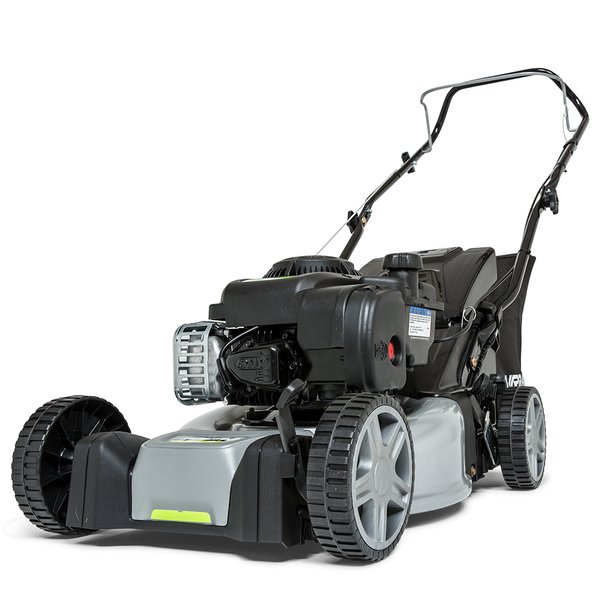

Murray EQ200
El Murray EQ200 és un tallagespa de gasolina potent i eficient, ideal per a jardins de gran extensió. Amb un motor Briggs & Stratton 450E de 125 cc i una amplada de tall de 41 cm, aquest tallagespa ofereix un rendiment excepcional en qualsevol tipus de gespa. A més, compta amb un sistema d'ajust d'alçada de tall en 6 posicions que permet adaptar el tall a les teves necessitats específiques.
El disseny robust i ergonòmic del Murray EQ200 el converteix en una opció ideal per a usuaris que busquen un tallagespa durador i fàcil de manejar. El sistema de pinta per a gespa assegura un tall net i uniforme, fins i tot prop dels marges.
No esperis més i adquireix el teu Murray EQ200 per gaudir d'un jardí perfecte en tot moment.
Compra ara